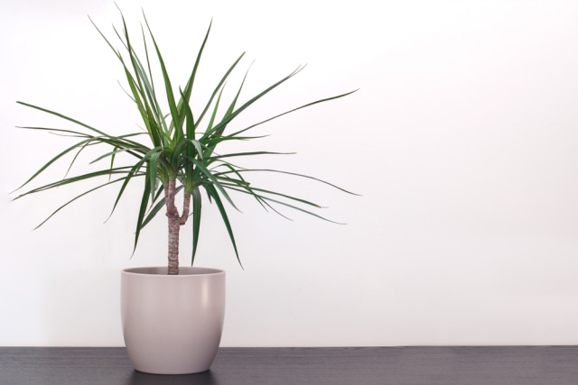
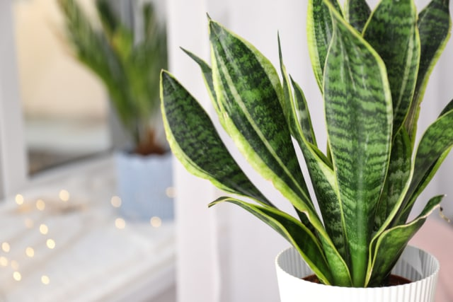
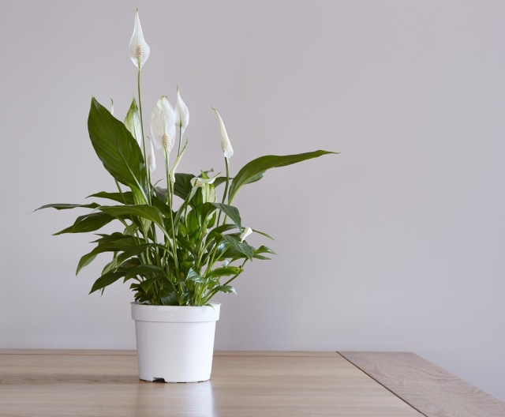

Tanaman Hias Indoor yang Mudah Dirawat
Bagaimana dengan Anda? Bagi Anda yang tak memiliki ruang cukup di luar rumah untuk berkebun, mungkin mencari tanaman hias bisa jadi pilihan. Dengan adanya tanaman hijau di dalam rumah, maka suasana di dalamnya pun akan terasa makin sejuk dan asri.
Terlebih, kebanyakan tanaman hias indoor ini cara perawatannya tak sesulit yang dibayangkan. Pada umumnya, tanaman hias tidak membutuhkan asupan air atau cahaya matahari yang banyak. Karena berbagai tanaman hias akan lebih tahan lama saat tak mendapatkan cukup asupan cahaya matahari. Anda pun cukup merawat atau menyiraminya sesekali dalam seminggu.
5 Jenis Tanaman Hias Indoor yang Mudah Perawatannya
1. Monstera
Monstera menjadi salah satu jenis tanaman hias yang cukup populer menjadi penghias ruangan di rumah. Salah satu hal menarik dari monstera adalah bentuk daunnya yang lebar, serta terdapat lubang-lubang pada helai daunnya sehingga terlihat indah.Tanaman ini pun mudah ditanam di segala tempat, baik dalam cuaca dingin maupun panas. Kendati semakin mendapatkan sinar matahari atau cahaya, monstera akan tumbuh dengan baik, namun sebaiknya Anda dapat menempatkan jenis tanaman ini di tempat yang teduh atau lembap.
2. Dracaena
Meski namanya terdengar asing, salah satu jenis tanaman ini juga tak memerlukan cahaya sinar matahari langsung. Sebab, dracaena dapat bertahan hidup dengan cahaya minim. Bahkan, tanaman ini dinilai dapat menyaring polusi udara atau gas-gas berbahaya.
3. Daun mint
Daun mint adalah salah satu tanaman yang mudah tumbuh, bahkan di ruangan teduh sekalipun. Selain dapat menjadi dekorasi ruangan yang akan memberikan nuansa menyegarkan, aroma dari daun mint ini rupanya tak disukai serangga. Ya Moms, itu artinya, tanaman ini bisa jadi salah satu cara untuk mengusir serangga di rumah.
4. Lidah mertua (Sansevieria atau Snake Plant)
Salah satu jenis tanaman yang memiliki nama unik ini juga disukai banyak orang. Lidah mertua sendiri dapat tumbuh di dengan baik di segala kondisi. Namun, Anda tetap disarankan untuk dapat menyiraminya sesekali dalam seminggu. Tak hanya sebagai penghias ruangan semata, lidah mertua juga berfungsi menyaring udara. Tanaman ini akan mengeluarkan oksigen di malam hari dan meningkatkan kualitas udara di rumah.
5. Peace lily
Siapa bilang tanaman yang memiliki bunga tak dapat bertahan hidup di dalam ruangan alias indoor? Ya, Peace lily adalah salah satu jenis tanaman yang dapat bertahan di dalam ruangan dengan pencahayaan sedang hingga rendah. Itu artinya, hindari meletakkan peace lily di bawah sinar matahari langsung, ya, Moms. Selain itu, peace lily juga dapat membantu menyaring udara di dalam ruangan, lho, Moms. Namun, jangan lupa untuk tetap merawatnya dengan cara menyiram dan beri sedikit demi sedikit percikan air di daunnya agar tetap lembap.